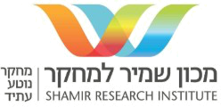
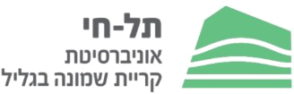
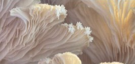
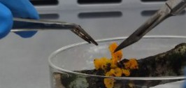
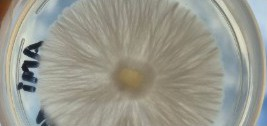

Golan-Galilee
Fungi Forum
כנס משותף של מכון שמיר למחקר, PITRIOT – המרכז הלאומי למיקולוגיה, ואוניברסיטת קריית שמונה תל-חי A joint conference by Shamir Research Institute, PITRIOT and Kiryat Shmona Tel-Hai University



יום 1:Day 1: מושב מדעי ומקצועיScientific & Professional Session
יום 2:Day 2: סיור פטריות מקצועי ושולחנות עגוליםProfessional mushroom tour and roundtables
קמפוס אוהלו ומכון שמיר למחקר, קצרין, רמת הגולןOhalo Campus & Shamir Research Institute, Katzrin, Golan Heights, Israel
על הכנסAbout the forum
מהיכרות עם עולם הפטריות – לשימוש מושכל בידע מיקולוגיFrom knowing fungi to putting mycological knowledge to work
כנס מקצועי-יישומי, ראשון מסוגו בישראל, המחבר בין מחקר, תעשייה, מדיניות וחדשנות בעולם הפטריות. נעסוק בתפקידן של פטריות כמנוע לשמירת היער, לשיקום מערכות אקולוגיות ולחיזוק המגוון הביולוגי, ובפיתוח פתרונות יישומיים בחקלאות, במזון, בבריאות ובתעשייה. A first-of-its-kind applied professional conference in Israel, bringing together research, industry, policy and innovation in the world of fungi. We will explore fungi as a driver of forest conservation, ecosystem restoration and biodiversity, and as a source of applied solutions for agriculture, food, health and industry.
למה עכשיו?Why now?
פטריות מפרקות חומר אורגני, יוצרות קשרים סימביוטיים עם צמחים, משפיעות על פוריות הקרקע ותורמות לחוסן היער מול יובש, שריפות, מחלות ושינויי אקלים. ובכל זאת, תחום הפטריות בישראל עדיין אינו ממופה ומונגש דיו, וחסרה מסגרת שמחברת בין מחקר, ניהול שטחים פתוחים, חינוך ויישום. Fungi decompose organic matter, form symbioses with plants, shape soil fertility and help forests withstand drought, fire, disease and climate change. Yet fungi in Israel remain under-mapped and under-communicated, and there is no framework that links research, open-space management, education and application.
מטרות הכנסGoals
- לקדם הכרה בפטריות כרכיב מרכזי בבריאות היער ובמגוון הביולוגיRecognize fungi as central to forest health and biodiversity
- ליצור זירת מפגש בין מחקר, יערנות, חקלאות, חינוך, קהילה ותעשייהCreate a meeting place for research, forestry, agriculture, education, community and industry
- לעודד מחקר יישומי, ביו-רמדיאציה, שיקום סביבתי וניטור פטריותEncourage applied research, bioremediation, restoration and fungal monitoring
- לחזק מדע אזרחי, חינוך סביבתי, קהילות ידע ואומנותStrengthen citizen science, environmental education, knowledge communities and art
- להניח בסיס לשיתופי פעולה ולפרויקטים שימשיכו אחרי הכנסLay the ground for partnerships and projects beyond the conference
התוכניתProgram
יום 1: מושבי הכנסDay 1: conference sessions
בקמפוס אוהלו ובמכון שמיר למחקר, קצרין. במקביל למושבים: פוסטרים, מפגשי שיח ונטוורקינג. המושבים יתקיימו בעברית ובאנגלית.At Ohalo Campus and Shamir Research Institute, Katzrin. Alongside the sessions: posters, discussions and networking. Sessions in Hebrew and English.
אקולוגיה וסביבהEcology & Environment
גידול ומזוןCultivation & Food
חומרי טבעNatural Materials
פטריות ברפואהFungi in Medicine
הגנת הצומח – פיטופתולוגיה והדברה ביולוגיתPlant Protection – Phytopathology & Biological Control
מדע אזרחיCitizen Science
לוח זמנים – יום 1Schedule – Day 1
תוכנית טנטטיביתTentative program| שעהTime | קמפוס אוהלו – אודיטוריוםOhalo Campus – Auditorium | מכון שמיר למחקר – חדר כנסיםShamir Research Institute – Conference room |
|---|---|---|
| 08:30–09:15 | התכנסות, הרשמה וקבלת פניםGathering, registration & welcome receptionאודיטוריום קמפוס אוהלוOhalo Campus auditorium | |
| 09:15–09:30 | דברי פתיחה וברכותOpening remarks & greetings | |
| 09:30–10:00 | הרצאת מפתח 1Keynote lecture 1 | |
| 10:00–10:30 | הרצאת מפתח 2Keynote lecture 2 | |
| 10:30–10:45 | הפסקת קפה ומעבר בין המבניםCoffee break & move between buildings | |
| 10:45–12:15 | גידול ומזוןCultivation & Food | אקולוגיה וסביבהEcology & Environment |
| 12:15–13:45 | ארוחת צהריים, מושב פוסטרים ודוכניםLunch, poster session & exhibitor booths | |
| 13:45–15:15 | פטריות ברפואהFungi in Medicine | הגנת הצומח – פיטופתולוגיה והדברה ביולוגיתPlant Protection – Phytopathology & Biological Control |
| 15:15–15:30 | הפסקת קפהCoffee break | |
| 15:30–17:00 | חומרי טבעNatural Materials | מדע אזרחיCitizen Science |
| 17:00 | סיום היוםEnd of day | |
כל מושב כולל כ-6 הרצאות של 15 דקות (12.5 דקות הרצאה ו-2.5 דקות שאלות).Each session includes about 6 talks of 15 minutes (12.5 min talk + 2.5 min questions).
יום 2: סיור פטריות מקצועי ושולחנות עגוליםDay 2: professional mushroom tour & roundtables
סיור בהובלת מומחים, חוקרים ומלקטים מנוסים בבתי הגידול של הפטריות, ולצידו שולחנות עגולים על כיווני פעולה להמשך: מחקר וניטור, מדע אזרחי, תוכניות חינוך ושיתופי פעולה ביערנות, שיקום, חקלאות וחדשנות.A field tour led by experts, researchers and experienced foragers through fungal habitats, alongside roundtables on next steps: research and monitoring, citizen science, education programs and collaboration in forestry, restoration, agriculture and innovation.
למי מיועד הכנסWho should attend